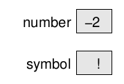
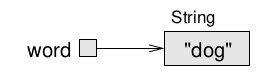
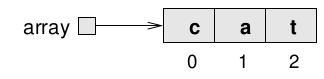
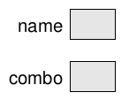

Immutable objecten
Contents
Immutable objecten#
In object georiënteerde programmeertalen worden objecten gebruikt om gegevens in op te slaan. Via klassen worden bijbehorende methodes beschikbaar gesteld.
Objecten waarvan gegevens (er wordt ook wel gesproken van ‘eigenschappen’) niet gewijzigd kunnen worden worden immutable genoemd.
Primitieve types vs. objecten#
In Java wordt onderscheid te maken tussen primitieve types en objecten. Objecten zijn niet-primitieve types.
Er zijn 8 primitieve types: byte, short, int, long, float, double, boolean, char.
Belangrijke eigenschap van een primitief type is dat de waarde wordt opgeslagen: 
In het geval van een object wordt een verwijzing opgeslagen naar het object in het geheugen.
Bijvoorbeeld een String: 
Ook een array is een niet-primitief type (ongeacht het type van de elementen). Daarom is ook een array een referentie: 
De ==-operator vergelijkt de waarde van een variabele. Als deze op objecten wordt toegepast, wordt de inhoud van objecten niet vergeleken. Daarom wordt voor het vergelijken van de inhoud van objecten de methode equals gebruikt.
Het keyword null#
Een niet-primitieve is een referentie. Het keyword null representeert een speciale waarde die betekent dat er geen verwijzing naar een object is. Of eenvoudig gezegd: Er is (nog) geen object.
Voorbeeld:
String name=null; // String-variabele, die niet naar een String-object verwijst
int[] combo=null; // Array-variabele, die niet naar een array verwijst
Een geheugen-diagram met de waarde null kan als volgt worden weergegeven: 
Als een methode wordt gebruikt van een object met de waarde null, dan treedt een NullPointerException op:
String name=null;
//if (name==null) {
// System.out.println("Welke name?");
//} else {
System.out.println(name.length());
//}
---------------------------------------------------------------------------
java.lang.NullPointerException: null
at .(#13:1)
Dit geldt ook voor het benaderen van een element van een array met waarde null.
Strings#
De klasse String bevat veel verschillende methoden voor strings.
Met echter geen van deze methoden is een string te veranderen.
Dit komt doordat strings immutable zijn.
Met andere woorden: Strings zijn onveranderbaar.
In het geval er een verandering plaats moet vinden in een bestaande string, dan wordt een nieuwe string gemaakt.
Bijvoorbeeld:
String name = "Alan Turing";
name.toUpperCase();
System.out.println(name);
Alan Turing
Omdat strings immutable zijn, heeft het aanroepen van de toUpperCase() methode geen effect op de string.
Daarom geeft de methode toUpperCase() een nieuwe string terug:
String name = "Alan Turing";
String nameUpper=name.toUpperCase();
System.out.println(nameUpper);
ALAN TURING
Het is niet nodig om een nieuwe variabele te declareren. De huidige variabele hergebruiken, kan ook:
String name = "Alan Turing";
name=name.toUpperCase();
System.out.println(nameUpper);
ALAN TURING
De originele string gaat in dat geval verloren, omdat er geen referentie meer naar is.
Ook voor andere bewerkingen met strings geldt dat deze plaatsvinden door een nieuwe string terug te geven.
Bijvoorbeeld:
String zin="Java is een moeilijke programmeertaal";
zin = zin.replace("moeilijke", "mooie");
System.out.println(zin);
Java is een mooie programmeertaal
Dat strings immutable zijn, is een bewuste keuze van de ontwerpers van Java. Het maakt geheugenbeheer eenvoudiger. Ook voorkomt het dat een string onbedoeld verandert als er meerdere referenties zijn.
Wrapper classes#
Soms is het nodig dat primitieve types eigenschappen hebben van een niet-primitief type: Opslaan van referentie in plaats van waarde of de beschikbaarheid van methodes.
Oplossing: Wrapper-classes.
primitief type |
wrapper class |
|---|---|
byte, short, int, long |
Byte, Short, Integer, Long |
double, float |
Double, Float |
boolean |
Boolean |
char |
Char |
Wrapper classes tbv. methodes#
Primitieve types hebben geen methodes omdat het geen objecten zijn. Wrapper classes bieden de nodige methodes.
De methodes parseInt en toString van de wrapper-class Integer zetten strings om naar integers, en andersom.
Voorbeeld:
String getalStr="123";
int getal = Integer.parseInt(getalStr);
getal++;
System.out.println(getal); // 124
124
int getal=65000;
String getalStr=Integer.toString(getal);
System.out.println("Het getal "+getal+" bevat "+getalStr.length()+" cijfers.");
Het getal 65000 bevat 5 cijfers.
Opslaan van referentie#
In sommige gevallen is een referentie nodig in plaats van een waarde.
Op verschillende manieren kan een integer worden omgezet naar een niet-primitieve:
Integer getal1 = Integer.valueOf(10);
Integer getal2 = new Integer(10);
Integer getal3 = 10; // autoboxing
System.out.println(getal1);
System.out.println(getal2);
System.out.println(getal3);
10
10
10
Dit is ook voor de andere primitieve types mogelijk, op vergelijkbare wijze.
Commandline argumenten#
Het argument van de main-methode is van het type String[], een string array.
Deze wordt gebruikt om te achterhalen welke commandline-argumenten zijn meegegeven bij de start van een programma.
Voorbeeld:
public class Commandline {
public static void main(String[] args) {
Random random = new Random();
int choice = random.nextInt(args.length);
System.out.println("Gekozen: "+args[choice]);
}
}
Als een applicatie werkt met argumenten via de commandline, dan is het belangrijk om deze te controleren om foutmeldingen te voorkomen. Dit wordt validatie genoemd.
Voorbeeld:
public class Commandline {
public static String chooseRandomName(String[] names) {
Random random = new Random();
int choice = random.nextInt(names.length);
return names[choice];
}
public static void main(String[] args) {
if (args.length<2) {
System.out.println("Geef tenminste twee namen mee op de commandline.");
} else {
System.out.println("Gekozen: " + chooseRandomName(args));
}
}
}
Uitgebreid voorbeeld:
public class Fibonacci {
/**
* Geeft het n-de getal in de rij van Fibonacci
* Zie https://nl.wikipedia.org/wiki/Rij_van_Fibonacci
* @param n Het n-de getal in de rij van Fibonacci
* @return Het getal in de rij van Fibonacci
*/
public static int fib(int n) {
int g0=0;
int g1=1;
while(n>0) {
int g2=g0+g1;
g0=g1;
g1=g2;
n--;
}
return g0;
}
public static boolean stringContainsInteger(String s) {
if (s.isEmpty()) {
return false;
}
for(int i=0; i<s.length(); i++) {
char ch=s.charAt(i);
if ((ch<'0') || (ch>'9')) {
return false;
}
}
return true;
}
public static void main(String[] args) {
if (args.length!=1) {
System.out.println("Geef op de commandline aan het hoeveelste getal in de reeks van Fibonacci bepaald moet worden.");
} else {
if (stringContainsInteger(args[0])) {
System.out.println(fib(Integer.parseInt(args[0])));
} else {
System.out.println("Ongeldig getal");
}
}
}
}
De klasse BigInteger#
Integers hebben een maximale grootte. Er kunnen grotere getallen opgeslagen worden gemaakt worden door gebruik te maken van het primitieve type long, maar ook daarmee zijn getallen eindig.
De klasse BigInteger biedt de mogelijkheid om met (in theorie) oneindig grote integers te werken.
Maken van BigInteger objecten:
BigInteger b1=BigInteger.valueOf(149); // Aan de hand van een long
BigInteger b2=new BigInteger("50000000000000000000000000000000000000000"); // Aan de hand van een string
System.out.println(b1);
System.out.println(b2);
149
50000000000000000000000000000000000000000
Operatoren om rekenkundige bewerkingen mee uit te voeren, zijn alleen beschikbaar voor numerieke variabelen. Dat zijn primitieven. BigInteger is een niet-primitieve, dus kunnen de rekenkundige operatoren niet gebruikt worden.
Daarom bevat de klasse BigInteger methoden voor rekenkundige bewerkingen, zoals add, multiply en pow.
Een volledige lijst van methoden is hier te vinden: https://docs.oracle.com/en/java/javase/11/docs/api/java.base/java/math/BigInteger.html
BigInteger b3=b1.add(b2); // b3=b1+b2
System.out.println(b3);
b3=b3.multiply(BigInteger.valueOf(20)); // b3=b3*20
System.out.println(b3);
50000000000000000000000000000000000000149
1000000000000000000000000000000000000002980
BigIntegers kunnen heel groot worden:
BigInteger b4=b3.pow(20); // b4=b3^20;
System.out.println(b4);
1000000000000000000000000000000000000059600000000000000000000000000000000001687276000000000000000000000000000000030168494880000000000000000000000000000382083987655200000000000000000000000003643552906279987200000000000000000000027144469151785904640000000000000000000161781036144643991654400000000000000000783424667530438529586432000000000000003112807345654275757556756480000000000010203782479054715933271047741440000000027642974352348230437407020244992000000061782047677498295027604690247557120000113298770510119950266007370423212441600168815168060078725896350981930586537984201227680327613841268450370461259153277115393277305090389681244407492047586489270595756792745732058849019841482778291273451892540397046922561679854603113217987206357870566652613603558522812344988375773481082714431239426930219899039403267535772057600000000000000000000
De methoden van BigInteger wijzigen de waarde niet. Reden: BigIntegers zijn immutable.
Daarom wordt de uitkomst van een rekenkundige operatie door de methode teruggegeven, in een nieuw BigInteger-object. Dit is vergelijkbaar met wat string-methoden doen.